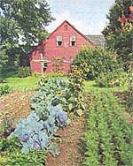
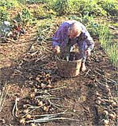
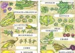
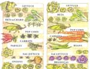
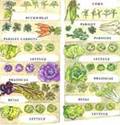
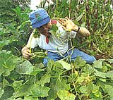
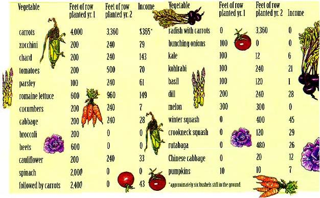

Plant For Profit
By Mort Mather
December/January 1997
Barters & Bootstraps
First adventures in a market garden.
By Mort Mather
I never wanted to garden for money... honest. Some are born into the gardening business, others have it thrust upon them. I only intended to grow what I needed. My family had just moved to a new, somewhat secluded home and besides, I had retired (at the age of thirty something-the first of several retirements) and I wasn't about to compromise all that relaxation time. I tried to keep the garden small, and anyone who knows me knows that I'm not terribly compulsive. But I couldn't stop making it bigger.
It all started with a half dozen tomato plants which I planted in the largest area of sod I could till with a front-end tiller in a day: about 300 square feet. The next year I hired someone to till and the garden jumped to 3,000 square feet. After two years of gardening I had planted the same amount of square-footage that an average home contains. I was amazed.
Spurred on by my newfound industry, I started writing a weekly garden column for the local paper that winter. That was pretty nervy of me considering my very limited experience. Writing kept me focused on the garden. I read a lot and put a lot of time into planning. When spring came I had a well thought out garden on paper. Most gardens were planned during the winter before I ordered seeds. Those that were not planned in advance suffered.
My next garden doubled in size again. In this garden I was trying to meet all the family's vegetable needs for a year. I grew too much winter and summer squash, too many peas, beans, potatoes, cucumbers and spinach, just to name some of the surplus. Rather than admit to poor planning, I pretended that I was trying to figure out how to grow produce for the market. I determined that 1,000 square feet planted intensively could produce a year's supply of vegetables for one person. Our family was two adults and two small children who didn't eat much. Three thousand square feet should have been more than enough.
I didn't cut back the next year, however. The 6,000 square feet had been worked a year. I didn't want that nice garden soil to go back to sod, so I planted with the thought of actually learning more about the possibility of selling vegetables. Having more space than I needed, I tried things like okra. The okra helped keep down the excess of food as a row produced only one edible pod. I planted my first asparagus bed. I also planted wheat, flint corn for corn meal, and pop corn.
I couldn't resist opening up some new ground, though. I should have sought psychiatric help then and there, because there was no question that I was striding quickly out of retirement and toward growing produce for sale. I spread manure, lime, and rock phosphate in fivefoot wide strips twenty-five feet apart. I had the strips tilled and I planted them with several crops that I thought would pretty much take care of themselves: winter squash, sunflowers and corn. These strips were out in the middle of the field behind our house. They could be seen from the house but they were not handy. I thought the sunflowers would look lovely out across the field and I might be able to sell the squash. The corn was for corn meal which meant I wouldn't be trekking across the field numerous times to harvest it; I would do it just once.
The width of strips was determined by the width of the tiller I was hiring to do the work. The spacing between the strips was determined by my experience mulching with grass clippings. It took about five square feet of spring grass and weed clippings, at the height they were when the garden was ready to be mulched, to mulch a square foot of garden. At that time I was controlling weeds almost entirely with mulch. It wouldn't be too much work to simply mow the areas between the rows with a simple lawn mower and rake it onto the tilled sections to keep down the weeds.
The plan worked well. So well that my first purchase as a market gardener was a riding mower with a vacuum to pick up the grass clippings. Now that I had a machine, clearly, I had to keep going.
Time and Experimentation
The only way to make the leap from 300 to 6,000 square feet is to have lots of available time. Being a relative novice, I had to keep an eagle eye on growing plants. The more experienced your eye the less time "keeping an eye" will take. For example, I can walk down a row of tomatoes now and spot tomato hornworm damage at a glance. An inexperienced gardener may not spot the damage until half the plant is defoliated and the hornworms are eating the tomatoes.
I also had time in my 3,000 square foot garden to attack witchigrass, that wonderful plant that propagates through underground stems called rhizomes. I spent untold hours digging these out by hand. If I had not had the time, the garden would have been back to sod by the end of the season.
I also had time to experiment. I planted certified seed potatoes with wood ashes worked into the soil, certified potatoes without ashes, and some potatoes we had left over from the year before. Potatoes like potassium. Wood ashes are high in that nutrient which is why I tried that experiment. However, wood ashes also raise the soil pH which makes the soil more friendly to the organism which causes potato scab. As I recall, the scab won that round but my own seed potatoes did at least as well as the purchased seed potatoes. Other experiments included eight varieties of lettuce planted on three different dates; two varieties of spinach planted on three different dates; zucchini planted with manure in the hill and without; carrots planted with radishes; pumpkins planted in the corn patch; onions from sets and from seed; and a few more similar experiments.
Experience makes everything easier and more efficient, but planning and abundant time are a pretty good substitute.
To Market
Chefs in northern climates love to talk to farmers in the winter. They are dying for good produce. So I drove to a natural food restaurant thirty-five miles away in Portland, Maine to talk with the chef. She told me they used eight cases of lettuce a week, three cases of zucchini, tomatoes, basil, parsley, onions (the big red ones), cauliflower, broccoli, a couple of hundred pounds of carrots, green beans, wax beans, chard, and the list went on. Yes, she would love organic produce if the price wasn't too much higher. I vowed to match the price of her usual supplier. I had a market. All I had to do was supply it.
So it was back to the books as I tried to plan my first market garden to meet the needs of my primary buyer. How many feet of row would it take to produce 200 pounds of carrots a week? Carrots were actually the easiest one to figure because I could store them in the root cellar and market them throughout the winter. Perishables like lettuce were more of a challenge. A ten-foot row of romaine might yield a case, but how many feet would it take to fill a case with buttercrunch? And how many days could I harvest until the lettuce started to bolt? I had been keeping records of happenings in my garden over the years but I didn't have that information. Would it be the same from one year to the next? Seed catalogs are an excellent place to find answers to questions like these.
As I look at the plot for the first year market garden, I want to say that it was planned as an experiment. As such I look brilliant. The fact of the matter was that I was hoping to make some money. I planted about half an acre, and half of that was in carrots and onions, crops that could be stored in the fall until sold. Decent planning. Another chunk of the market garden was planted in flint corn for corn meal and chicken feed. I was taking advantage of having land under cultivation that was far enough distant from the rest of the garden so corn would not crosspollinate. I planted quite a few tomatoes but the rest of the half acre was a little bit of everything my chef wanted.
When the cauliflower was ready to harvest, nothing else was. I couldn't justify a trip to sell just cauliflower, especially when I wouldn't have anything to sell the next week. If I wanted customers who thought I knew what I was doing, I'd have to do better than wander in every other week or so with who-knew-what. It wasn't until fall that I had enough of anything to make the trip to Portland worthwhile.
I figured that if I called to try and get an order over the phone the cost of the phone call might eat up any potential income. I was also pretty sure my chef would have forgotten who I was by that time. I washed and bagged fifty pounds of carrots and put them in two bags. At the end of summer my chef was not nearly as pleased to see me as she had been in winter. She was tired from overwork and she had been getting reasonably good produce all summer. It was a hassle for her to write out a check for a small order when she could be billed weekly by a supplier who always gave her what she ordered. She took a bag of car rots because of the look on my face. I've been told I have a very good lost puppy dog look. The lost puppy asked if it would be all right to bring some more next week and received an unenthusiastic OK.
The next week when I arrived at the delivery entrance to the restaurant with two bags of carrots, everyone from the dishwasher to the chef told me what good carrots they were. The chef wanted two hundred pounds a week as long as the supply held, and did I have anything else? They took as many tomatoes and zucchini as I could supply until frost ended the fun.
The chef wanted to know when I would start delivering next year. She was already looking forward to more organic produce. I told her of my problem of not having enough to deliver to make the trip worthwhile. We found a wonderful solution. Barbara developed a maple walnut pie with all natural ingredients. We delivered as many as a dozen of these a week which meant the vegetables could ride for free.
The bottom line for that first market garden? I spent $537 and took in $497 for a loss of $40. However, $178 was for lime and rock phosphate which would not have to be reapplied to the field for at least three years. I am still using a pitch fork, fence posts, and fence for the peas purchased that year. So I actually made some money.
First Year Lessons
I never had success growing melons and never got a very good yield from peppers and eggplant. I don't know what made me think that becoming, or trying to become, a professional vegetable grower would make it suddenly possible for me to grow crops that had been difficult before on a small scale. It was not a good time to try to reverse history.
I had never grown red onions. Growing onions from seed, I already knew, was challenging because they have small leaf area and need a lot of sun. They must not be allowed to be overrun by weeds. I planted four different kinds of onion from seed, over 2,000 feet of row. They were all lost to weeds. I learned several things in the process that have proven invaluable.
First, weed control is the number one priority once planting has begun. I remember thinking that crops had to be planted before they could grow into a marketable product. That is true as far as it goes but the crop also has to be brought successfully through to maturity. If one crop is being overrun with weeds while other crops are being planted, all the labor that went into planting the overrun crop is lost. I spent a day on hands and knees trying to rescue onions before I realized the amount of time I was putting in would never be recovered in the sale of the crop. Time is not particularly important to me in my home garden. With time there is recreation, rejuvenation, a space for contemplation. While I generally reject the notion that time is money, they do equate in the market garden. One hundred feet of row will yield 100 pounds of onions. Seeds, fertilizer, and the cost of turning the soil may be about $10. If you can sell the onions at 60 cents per pound you will have an income of $50 from the 100 foot row. If you invest one hour of time in the row, your wage will be $50 an hour; if half an hour, $100 an hour; if two hours, $25 an hour. And so on.
I found myself spending an hour per row just on weeding. Once the weeds were as big as the plants their roots were entangled with the onion roots so each weed had to be pulled carefully. It was fool's work and I eventually realized it and abandoned the onions. Even though I eventually learned enough to grow onions commercially, I never did. I was the carrot man. That was my signature crop. I took other crops that I was good at growing and built my market garden around them.
Pick Your Markets Just as You Pick Your Friends
Some people carry too far the idea of growing what is easy. I got a call one July from someone who had planted and brought to harvest an acre of zucchini. Now that they had a product, they were looking for a market. I still shake my head whenever I recall that one. This person thought the whole world was wrong because they had a great product they couldn't sell. If you want to grow a perishable product in quantity, be sure you have a solid market waiting for it. A contract might be a good idea.
My advice to any gardener who wants to become a market gardener is to plan, plan, plan. The first plan should probably be to lose money the first year. Look upon it as an education year. It will be a lot less expensive than a year of college and possibly more instructive.
Start your plan with what you know. What crops grow well on your soil in your location? Make a list. What do you envision as the market for your produce? How well do you know the market? If you're thinking of a roadside stand, how much traffic goes by? Is there competition? Do the people going by have gardens of their own that will be producing the same things at the same time as yours?
If you want to sell at a farmer's market, talk to the people already there. Perhaps they can suggest a special niche for you. Some people have success contracting with their customers in advance.
The customers buy shares in the market garden in advance and come to the farm to pick up their produce weekly during the growing season.
I found my niche in restaurants and natural food stores. In both cases there was no local competition when I started. At that time there were only a handful of certified organic growers in Maine. This year there are 174 and many of them are selling vegetables to restaurants. The competition will be a serious consideration if I decide to restart my market garden, something I'm thinking about. I know some of the other growers and would ask them if there is room for me with any of their suppliers. If not I'll find another market so I don't end up competing directly with another local organic grower.
Locally grown produce is clearly in more people's minds now than it was just a few years ago. The supermarkets in this area have banners in their produce sections proclaiming "STRAIGHT FROM A LOCAL FARMER." My output was too small for the supermarkets.
However, a friend of mine was selling to a local supermarket several years ago when they told him he could no longer deliver to the market in his area and that he would have to deliver his produce to their distribution center in Massachusetts. Either they have changed their policy or their definition of "local" is pretty broad. The important thing is that the market for locally grown produce has not been better in my lifetime. Organically grown produce is also highly popular now.
When you know what you are going to grow and have an idea what the market is, put your plan down on paper.
Second Year's Profits
The second market garden grossed $1,154 with $262 in expenses. As you can see, there were some changes between the original plan and the planting. I decided not to plant beets, broccoli, or bunching onions for reasons of euphony, possibly. Crookneck squash and Chinese cabbage were added to the list at the request of my primary market, the natural food restaurant. Dill and basil were also added by request. I would supply basil from the moment it reached maturity until just before frost. The last harvest would be to clean it all out before the frost killed it. I delivered several cases with which the chef made pesto for winter use. The chef still remembers me for my basil. That basil was certainly the most fragrant of all my crops.
When to plant was the trickiest part of planning. The carrots could an get planted at one time but at what moment is the question. If you have your hands full harvesting lettuce, parsley, zucchini, cucumbers, dill, basil, chard and tomatoes from the middle of August until frost, do you want to add the harvest and washing of carrots to your work load? No matter how good you are or how hard you work, there is no way to get more than 24 hours out of a day unless you add another person. I didn't want to hire someone or call upon Barbara except in emergencies.
Succession and Campanian Planting
Planning planting dates is more involved than finding the earliest date for your climate. Succession planting, especially for crops like lettuce, is something that good gardeners ought to be doing. In the garden we might make three plantings of lettuce three weeks apart. In the market garden the plantings may be spaced based on the amount of lettuce you can reasonably harvest and market. You could plant lettuce every week or every other week or every three weeks. It is probably more efficient to plant as seldom as possible, at three week intervals for lettuce.
I like to plant carrots and radishes together and at the same time. I mix the seeds together in the seeder. The seeder rolls along the rows opening the ground, dropping the seeds, covering them, and firming the soil over them. The planted rows are easily seen after planting which makes it possible for me to mulch with grass clippings between the rows before the plants emerge. I start harvesting the radishes in a little over three weeks and the harvest lasts for up to two weeks. At that time I pull all the rest of the radishes because by this time the carrots need the space. I weed at the same time I harvest the radishes. It is just a little in-row weeding because the mulch has taken care of the space between the rows. Radishes are not a big cash crop but they serve me well if I just break even. Planting carrots and radishes together was motivation to schedule several of these plantings one to two weeks apart.
Where to plant also deserves some planning. It is generally easiest to start at one side of the plot and plant each crop as it comes. That would probably result in peas along the beginning edge, then spinach, then lettuce, then cabbage, cauliflower, broccoli, Brussels sprouts, etc. The next year the same crops would be planted in the same place. This is never a good idea. Others will give you a list of other reasons why it is not a good idea, such as insects and diseases lingering in the soil to attack the next crop. My reason is that each crop takes something from the soil. We know that corn is a heavy user of nitrogen and that peas actually return nitrogen to the soil. Is it reasonable to think that beets and Brussels sprouts take the same mix of things from the soil? Best to rotate crops so no crop is searching for the same mix of nutrients year after year in the same soil.
There are families of vegetables and I like to keep them together if it is convenient. The experts say to separate them to confuse insects and disease. Separating them and making sure none follows its kin in successive years creates a lot of unnecessary work.
It took me five years of groping and grouping to get a rotation of the crops that I could use year after year. The reason for this was that I kept changing the mix and adjusting the amounts of different crops as I learned how much to plant to match my time and my markets. Lettuce became my biggest crop, using about a third of the market garden. With three plantings I couldn't keep it all to gether while progressing across the field somewhat systematically. What evolved came from a combination of planning for rotating the crops and the convenience of planting consecutively. I found the best rotation for me by coloring in each family with a different color on a plot done to scale for the previous two years. There were three lettuce plots, each separated by two other plots of approximately the same size. The ground would see lettuce every three years. If I wanted to plant more lettuce, I would have to open some more ground. The other crops were in six to twelve year rotations.
A record like this (comparing first end second year plantings) is en invaluable planning tool for next season's garden.
I penciled projected planting dates on the plot but I found it not to be the best place for that information. It would have been all right if the planting were going to progress systematically across the plot, but when it jumps around, dates can be missed. I found it helpful to make a chronological list of planting dates. This became the work list for each day. When I planted something I would ink-in the date and make a note in pencil to cultivate this section in ten days if it hadn't been mulched by that time. Penciling and inking my way down this list was a great help.
One final great planning tool are the notes from the previous season. Never trust yourself to remember when you spotted your first cabbage worm, when you noticed a new weed in a section of the plot, or what you used as mulch or fertilizer. I made a note one year to plant no more than two varieties of tomatoes. The reason was that I had trouble harvesting sufficient quantities of any one variety at any one time. It is fun to mix varieties at home, but when selling tomatoes, it is best if they all look pretty much alike.
Notes taken during and immediately after the season were my most important resource for the next season. These notes reminded me that though I could sell more peas, I couldn't harvest them without jeopardizing other crops. They reminded me to make a note on my calendar to tie the cauliflower heads about July 10 and to plant scallions closer together. The notes gave me an idea of how much time went into various tasks like mulching carrots, cultivating, and harvesting. The restaurants that wanted dill bought bunches of tender plants. No book would tell me that I could sell 20 feet of row per week for $12 or that the best way to plant it was to tap the seeds into the shallow trough made by the seeder's row marker.
The illustrations on the preceding pages are an attempt to give you an idea of where to begin. Your experience, the local marketplace, and occasional heartbreaks might well take you in quite another direction. Don't be surprised if you wake up one morning and find yourself tending a full acre of carrots while your family and neighbors look on with a combination of pity and concern on their faces. By the time that happens, I hope I'll be retired, again.
 PHOTOS: WALTER CHOROSZEWSKI As I get older, it's increasingly shocking how brief the interval is between planning and harvesting, and a small dose of the former, does wonders for the latter. |
 Even the most careful of us are occasionally victims of poor planning. |
 |
|
 |
 |
 |
|
 |
 |
|